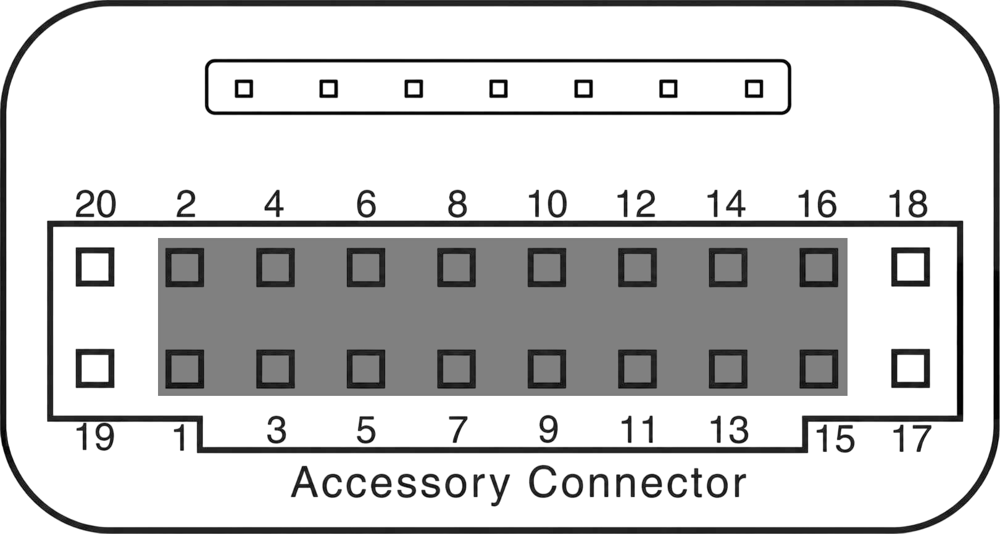
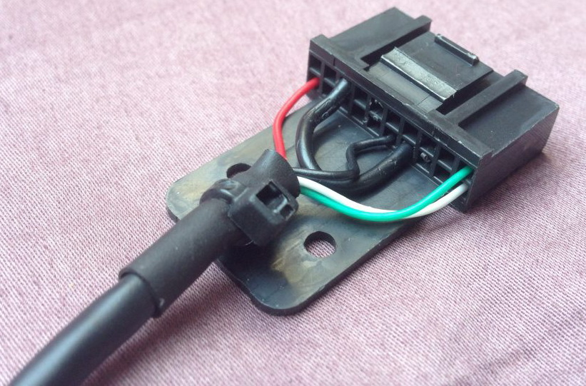
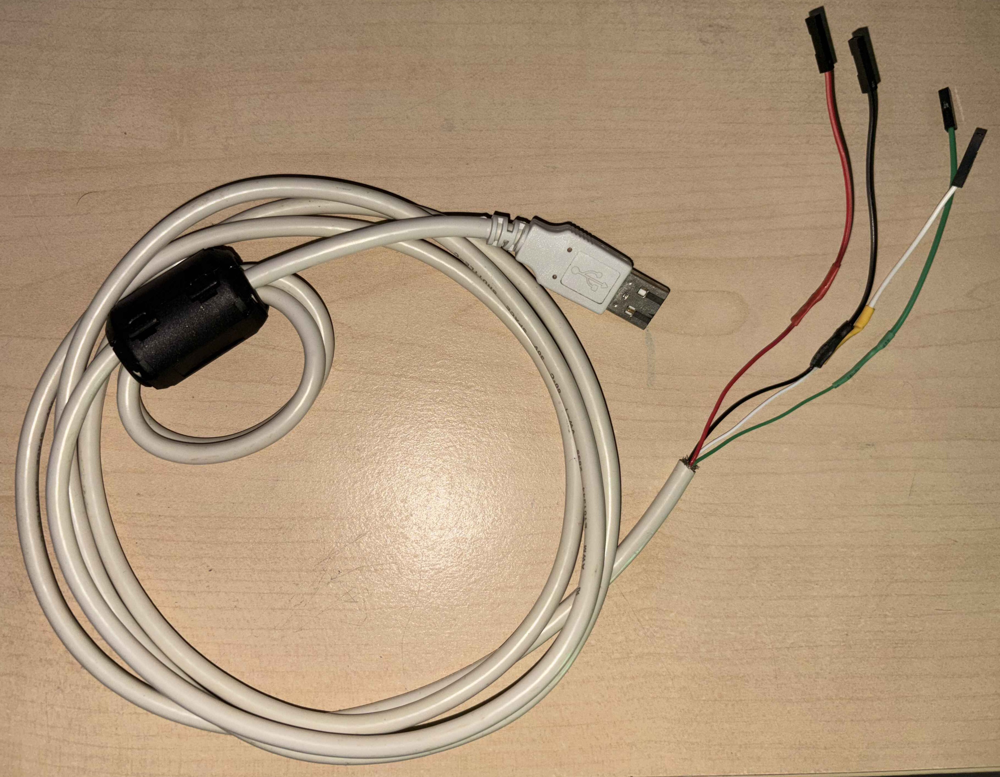

Programmierkabel für das Motorola MTM800E herstellen
Das MTM800E wird über den Accessory Connector auf der Rückseite programmiert. Dieser Stecker ist ähnlich wie bei den Serien GM300 oder TM900, hat aber zusätzliche Pins. Mit einem handelsüblichen USB-A-auf-B-Kabel und bei Bedarf einem passenden Stecker lässt sich ein Programmierkabel einfach selbst bauen.
Pinbelegung
| Pin | Bezeichnung | Beschreibung |
|---|---|---|
| 1 | EXTERNAL SPEAKER − | Lautsprecher − (Gegenstück zu Pin 16) |
| 2 | EXTERNAL MIC AUDIO | Externer Mikrofoneingang (80 mVRMS, 660 Ω DC) |
| 3 | EXTERNAL PTT | Digitaler PTT-Eingang (Low = aktiv) |
| 4 | EXTERNAL ALARM | Alarmausgang (Open Collector, 4k7 Pull-up) |
| 5 | TX_AUDIO | TX-Audio-Einspeisung (>10 kΩ, 775 mVRMS) |
| 6 | KEYFAIL/FLASH | Verschlüsselungsmodul |
| 7 | ANALOG GROUND | Analoge Masse |
| 8 | DIGITAL GROUND | Digitale Masse |
| 9 | EMERGENCY | Emergency (Low = aktiv, schaltet Gerät ein) |
| 10 | IGNITION | Zündungseingang (High = aktiv) |
| 11 | RX_AUDIO | RX-Audio-Ausgang (775 mVRMS, 600 Ω) |
| 12 | AUDIO_PA_ENABLE | Audio-PA freigeben (High = ein) |
| 13 | SWB + | Geschaltete Versorgung (max. 1,0 A) |
| 14 | HOOK | Hook-Status (Low = aufgelegt, High = abgehoben) |
| 15 | SCI_DTR | Service (reserviert) |
| 16 | SPEAKER + | Lautsprecher + (Gegenstück zu Pin 1) |
| 17 | SCI CTS | Service (Clear To Send, reserviert) |
| 18 | SCI RTS | Service (Request To Send, reserviert) |
| 19 | SCI RXD | Service (Receive Data, reserviert) |
| 20 | SCI TXD | Service (Transmit Data, reserviert) |
Benötigte Materialien
Gut zu wissen: Der Accessory-Stecker ist praktisch, aber nicht zwingend nötig. Du kannst auch Female-Jumper-Wires (Buchsen-Seite) nehmen und die Kontakte direkt von hinten auf die Stiftleiste des Funkgeräts stecken – das spart die Suche nach dem original Stecker.
- USB-A-auf-B-Kabel (gängiges Drucker-/Scannerkabel, je besser die Qualität desto besser)
- Passender Accessory-Stecker für das MTM800E oder Female-Jumper-Wires
- Lötkolben, Lötzinn, Schrumpfschlauch

Bauanleitung
- USB-Stecker abtrennen – Den USB-B-Stecker des Kabels abkneifen, sodass die Adern frei liegen.
- Pins identifizieren – Anhand der Pinbelegung die richtigen Kontakte am Accessory-Stecker bestimmen: Pin 18, 8, 19 und 20.
- Kabel abisolieren – Die Enden der USB-Kabeladern und die Lötstellen am Stecker abisolieren bzw. verzinnen.
-
Verbindungen löten – Die folgenden vier Pins
miteinander verbinden:
Pin Anschluss Funktion 8 GND Masse 18 VCC Spannungsversorgung (3.3V) 19 TXD Daten senden 20 RXD Daten empfangen 

- Kabel testen – Mit einem Multimeter die Durchgängigkeit aller Verbindungen prüfen.
- Schrumpfschlauch anbringen – Alle Lötstellen mit Schrumpfschlauch isolieren.
Fertig! Das Kabel wird am PC als USB-Seriell-Adapter erkannt. Für die Programmierung des MTM800E wird die Motorola CPS (Customer Programming Software) benötigt.
Hinweis: Wer kein USB-, sondern ein RS232-Kabel bauen möchte, findet bei PE2KMV eine Schritt-für-Schritt-Anleitung.
Hinweis: Anleitung & Pinout basieren auf dem Originalartikel von HamTetra Network.
Wichtiger Hinweis: Ich übernehme keine Haftung für eventuelle Schäden an deinem Funkgerät oder Programmierkabel. Alle Angaben ohne Gewähr. Bau und Nutzung erfolgen auf eigene Gefahr.